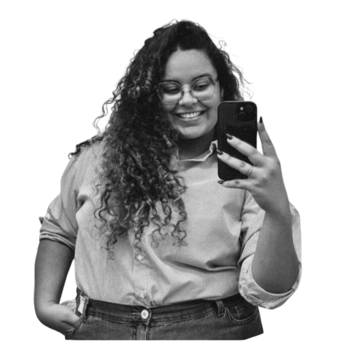

A Artista
Nascida em Vila Velha, transformo o sentir em imagem. Do cuidado da saúde à precisão técnica, meu olhar é focado no que é essencial.
O Repertório
Técnica em Segurança do Trabalho e Bacharel em Enfermagem. Minha formação traz ética e presença para o audiovisual.

Social Content
Estratégia e estética para marcas que desejam se destacar no digital com vídeos inovadores.

Eventos
Cobertura em tempo real com a agilidade do mobile e a qualidade do cinema.
O Essencial
"O essencial nem sempre é visto — mas pode ser guardado quando alguém escolhe observar."